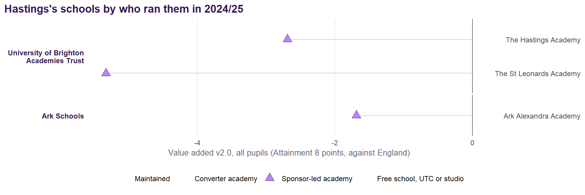
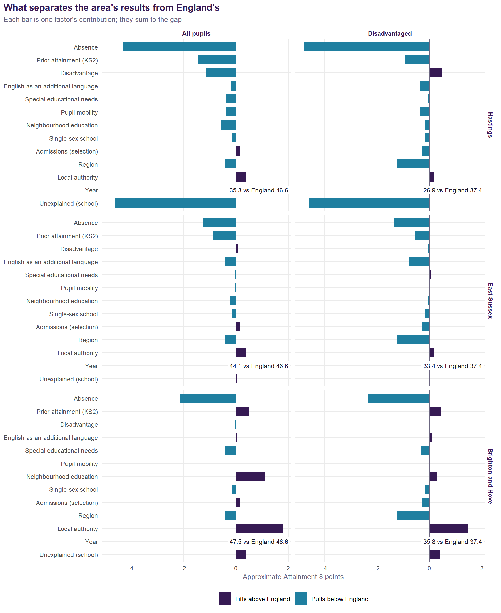
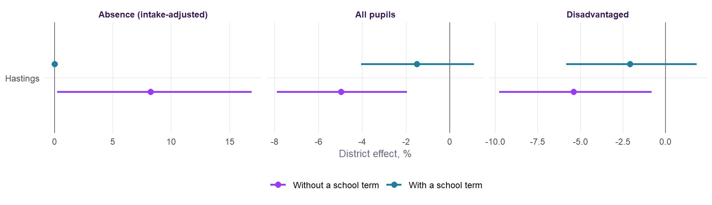
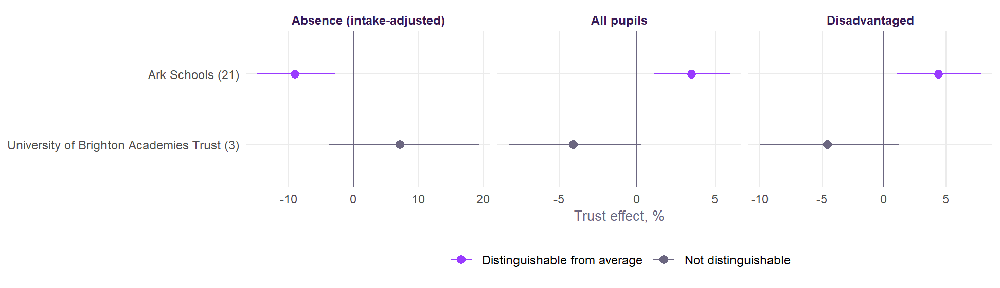
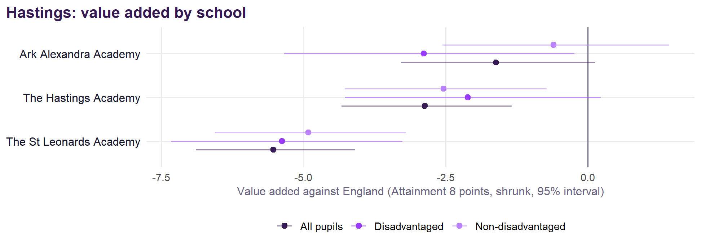
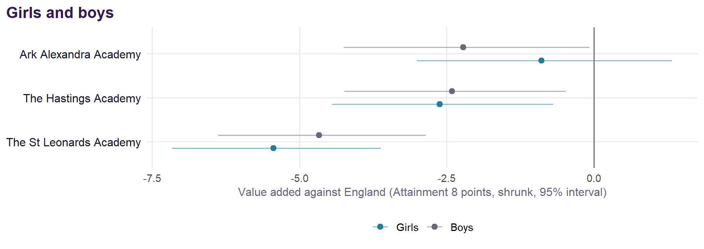
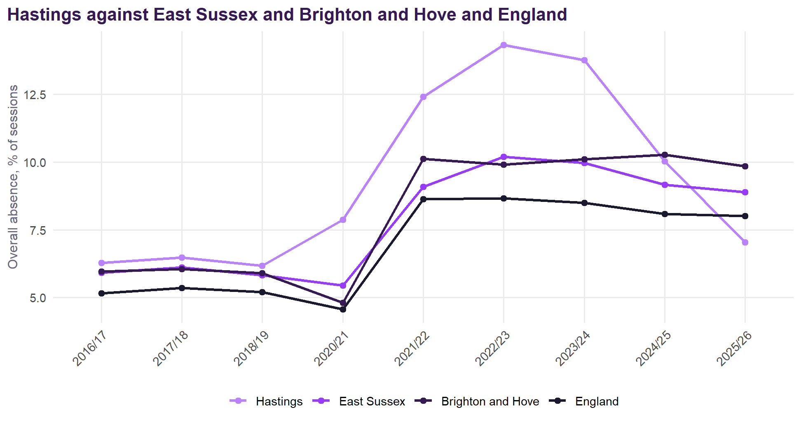
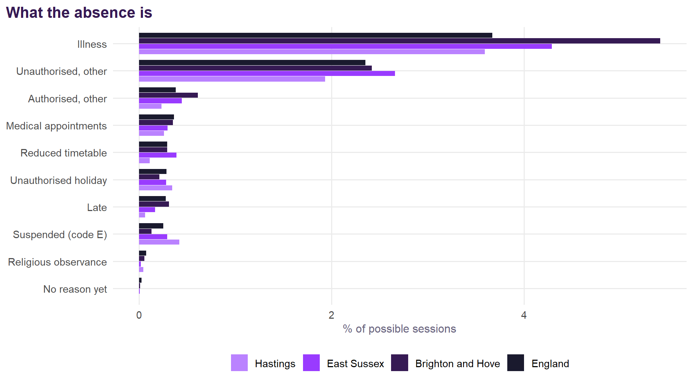
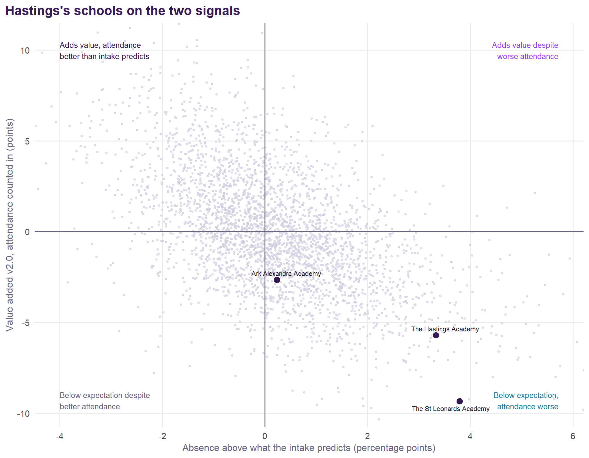

Each school coloured by Value Added v2.0 for all pupils; choose another measure, including absence against intake, from the menu. Circle size is the school’s roll; hover for every group’s value added, absence against intake, the published v1 figure, and Ofsted.
Hastings
Value Added v2.0 for the secondary schools of Hastings, East Sussex.
NoteAbout this page
Value Added v2.0 for Hastings’s state-funded secondary schools, 2021/22 to 2024/25, measured against England (see the method), with the analyses of the original Sussex document refitted on the v2.0 model. Built from published DfE and Ofsted data; nothing uses pupil-level records.
Summary
- 3 schools, with value added for all pupils averaging -3.3 points against England: none significantly above expectation and 2 below.
- Disadvantaged pupils -3.4, non-disadvantaged -2.6; girls -3.1, boys -3.2.
- Strongest: Ark Alexandra Academy (-1.7). Weakest: The St Leonards Academy (-5.5).
- Absence runs 2.5 points above what the intake predicts on average over 2021/22 to 2024/25; The St Leonards Academy and The Hastings Academy more than a point above.
- District effects on the v2.0 model (Hastings for all pupils (-4.4%), Hastings for disadvantaged pupils (-5.4%) and Hastings for absence (+8.5%)) disappear once each school’s own record is counted: they belong to schools, not places.
- Suspensions: 77.8 episodes per 100 pupils (England 21.2); 19.8 pupils per 100 suspended at least once (England 7.3). Reduced timetables run at 0.4 times the national rate.
- Trusts that stand out nationally on v2.0: Ark Schools (disadvantaged pupils +4.4% and absence -9.0%).
- Latest Ofsted: 2 report cards and 1 inspection with no overall grade.
- 2025/26, provisional: value added for all pupils averages -3.9 points across the area’s schools on DfE’s provisional results. This will be updated with the revised release in February 2027.
The schools
| School | District | All pupils | Disadv. | Non-disadv. | Girls | Boys | Absence vs intake | 2025/26 (provisional) | v1 | Ofsted latest | Run by (2024/25) |
|---|---|---|---|---|---|---|---|---|---|---|---|
| Ark Alexandra Academy | Hastings | -1.7 (-3.8 to +0.5) | -3.0 | -0.7 | -1.0 | -2.3 | +0.2 | -0.1 | -1.9 | Report card (Jun 2026): achievement Strong standard, curriculum and teaching Strong standard | Ark Schools |
| The Hastings Academy | Hastings | -2.9 (-4.7 to -1.0) | -2.0 | -2.3 | -2.7 | -2.5 | +3.3 | -5.6 | -3.5 | Report card (Jan 2026): achievement Needs attention, curriculum and teaching Expected standard | University of Brighton Academies Trust |
| The St Leonards Academy | Hastings | -5.5 (-7.2 to -3.7) | -5.2 | -4.7 | -5.6 | -4.7 | +3.8 | -5.9 | -5.3 | No overall grade (Jan 2025): quality of education Inadequate | University of Brighton Academies Trust |
Who runs them

How Hastings compares
| Measure | Hastings | East Sussex | Brighton and Hove | England |
|---|---|---|---|---|
| Attainment 8, all pupils | 37.8 (263rd) | 43.8 | 45.5 | 46.8 |
| Attainment 8, disadvantaged | 29.5 (262nd) | 33.0 | 33.9 | 37.7 |
| Attainment 8, non-disadvantaged | 42.4 (260th) | 47.5 | 49.6 | 49.9 |
| Disadvantage gap (points) | 13.0 (119th) | 14.5 | 15.7 | 12.2 |
| Disadvantaged (FSM6) % | 35.1 (44th) | 25.5 | 28.8 | 28.4 |
| Overall absence % | 10.1 (26th) | 9.7 | 11.3 | 8.6 |
| Persistent absence % | 32.1 (2nd) | 26.4 | 30.6 | 23.9 |
| Mean KS2 (centred) | 3.73 (199th) | 3.79 | 4.71 | 4.47 |
| EAL % | 8.9 (164th) | 6.3 | 13.0 | 18.4 |
| Value added v2.0, all pupils | -3.3 | +0.1 | +1.6 | 0.0 |
| Value added v2.0, disadvantaged | -3.4 | -0.6 | +0.5 | 0.0 |
| Absence against intake (pp) | +2.5 | +0.3 | +1.6 | 0.0 |
What explains attainment in Hastings

| Factor | All pupils | Disadvantaged |
|---|---|---|
| Unexplained (school) | -4.68 | -4.59 |
| Absence | -4.22 | -4.79 |
| Prior attainment (KS2) | -1.44 | -0.95 |
| Disadvantage | -0.90 | +0.48 |
| Neighbourhood education | -0.61 | -0.15 |
| Pupil mobility | -0.43 | -0.36 |
| Special educational needs | -0.41 | -0.07 |
| Single-sex school | -0.15 | -0.17 |
| English as an additional language | -0.13 | -0.35 |
| Place (region and local authority) | -0.03 | -1.05 |
| Other model terms | +0.13 | -0.27 |
For all pupils, Hastings is 12.9 points below England. The pieces of at least a quarter of a point:
- absence (-4.22);
- prior attainment (KS2) (-1.44);
- disadvantage (-0.90);
- neighbourhood education (-0.61);
- region (-0.47);
- local authority (+0.43);
- pupil mobility (-0.43);
- special educational needs (-0.41);
- and the schools themselves (-4.68).
For disadvantaged pupils, Hastings is 12.3 points below England. The pieces of at least a quarter of a point:
- absence (-4.79);
- region (-1.22);
- prior attainment (KS2) (-0.95);
- disadvantage (+0.48);
- pupil mobility (-0.36);
- English as an additional language (-0.35);
- admissions (selection) (-0.27);
- and the schools themselves (-4.59).
Place: authorities and districts

The district test adds a district level to the v2.0 model, with and without each school’s own record. An effect that disappears once schools are counted belongs to particular schools; one that survives is something the district’s schools share.

Without each school’s own record: Hastings for all pupils (-4.4%), Hastings for disadvantaged pupils (-5.4%) and Hastings for absence (+8.5%). With it, none remains: the differences belong to particular schools, not to the districts as places.
Trusts
The v2.0 model with a multi-academy trust level, allowing for each school’s own record and for how it came to be an academy, so trusts that take on struggling schools are not penalised for it. Nationally a trust moves results by about 2.4%, and absence by about 6.5%.

The disadvantaged gap, and girls and boys

No school is above expectation for its non-disadvantaged pupils while more than a point below it for its disadvantaged ones.
In no school do girls’ and boys’ value added differ by more than two points.

Absence

- 7.0% absence in autumn and spring 2025/26 (10.0% a year earlier), against 8.0% for England.
- Against its intake, on the v2.0 intake terms, the area’s schools ran 2.46 points above what their pupils’ profiles predict over 2021/22 to 2024/25 (East Sussex +0.31 and Brighton and Hove +1.64).
- The St Leonards Academy and The Hastings Academy each run more than a point above their predictions.
| School | Absence % | Predicted by intake % | Above prediction | Illness | Unauthorised | Reduced timetable | Suspended |
|---|---|---|---|---|---|---|---|
| The St Leonards Academy | 14.2 | 10.4 | +3.8 | 3.1 | 2.7 | 0.20 | 0.09 |
| The Hastings Academy | 15.0 | 11.6 | +3.3 | 3.8 | 1.7 | 0.03 | 0.39 |
| Ark Alexandra Academy | 10.5 | 10.3 | +0.2 | 3.7 | 1.6 | 0.11 | 0.62 |

Suspensions were 77.8 episodes per 100 pupils in 2024/25, against 21.2 for England. One pupil can be suspended several times: 19.8 pupils per 100 were suspended at least once, about 3.9 times each, against 7.3 per 100 and 2.9 times in England. Reduced timetables take 0.11% of sessions, 0.4 times England’s rate.
| School | Pupils | Suspension episodes per 100 | Pupils suspended per 100 | Permanent exclusions |
|---|---|---|---|---|
| The Hastings Academy | 808 | 89.9 | 20.4 | 8 |
| Ark Alexandra Academy | 1431 | 74.7 | 19.8 | 2 |
| The St Leonards Academy | 1322 | 73.7 | 19.4 | 0 |
| School | Absence % | Gain, all pupils | Gain, disadvantaged |
|---|---|---|---|
| The St Leonards Academy | 11.1 | +2.0 | +2.3 |
| The Hastings Academy | 10.2 | +1.6 | +1.7 |
| Ark Alexandra Academy | 8.9 | +0.4 | +0.5 |
School by school

Across England the two signals move together: schools whose absence runs below what their intake predicts tend to add more. Across Hastings’s schools the correlation between the two is -0.90 (-0.54 across England).
Contextual league tables
Warning2025/26 is provisional
2025/26 is provisional: predicted from the v2.0 model using DfE’s provisional KS4 results (October 2026), with absence bridged from autumn and spring and the intake data not yet published carried forward. It will be updated with the revised KS4 release in February 2027. It is shown beside the four-year figure, not averaged into it, and is not shrunk: one provisional year of a school’s results moves a good deal.
| School | 2021/22 | 2022/23 | 2023/24 | 2024/25 | v2.0, four years (shrunk) | 95% interval | 2025/26 (provisional) |
|---|---|---|---|---|---|---|---|
| Ark Alexandra Academy | -1.7 | -4.2 | -1.3 | -1.2 | -1.7 | -3.8 to +0.5 | -0.1 |
| The Hastings Academy | -1.5 | -4.2 | -4.4 | -3.1 | -2.9 | -4.7 to -1.0 | -5.6 |
| The St Leonards Academy | -7.0 | -4.3 | -7.2 | -6.5 | -5.5 | -7.2 to -3.7 | -5.9 |
| School | 2021/22 | 2022/23 | 2023/24 | 2024/25 | v2.0, four years (shrunk) | 95% interval | 2025/26 (provisional) |
|---|---|---|---|---|---|---|---|
| The Hastings Academy | -0.4 | -2.4 | -3.9 | -4.2 | -2.0 | -4.1 to +0.4 | -3.8 |
| Ark Alexandra Academy | -2.8 | -5.5 | -5.6 | -1.7 | -3.0 | -5.4 to -0.3 | -2.4 |
| The St Leonards Academy | -7.9 | -7.6 | -5.6 | -6.0 | -5.2 | -7.2 to -3.1 | -6.3 |
| School | 2021/22 | 2022/23 | 2023/24 | 2024/25 | v2.0, four years (shrunk) | 95% interval | 2025/26 (provisional) |
|---|---|---|---|---|---|---|---|
| Ark Alexandra Academy | -0.6 | -4.0 | +2.0 | -1.2 | -0.7 | -2.7 to +1.3 | +0.8 |
| The Hastings Academy | -1.3 | -3.7 | -3.6 | -2.2 | -2.3 | -4.0 to -0.5 | -4.9 |
| The St Leonards Academy | -6.0 | -2.8 | -7.1 | -5.8 | -4.7 | -6.3 to -3.0 | -4.9 |
| School | 2021/22 | 2022/23 | 2023/24 | 2024/25 | v2.0, four years (shrunk) | 95% interval | 2025/26 (provisional) |
|---|---|---|---|---|---|---|---|
| Ark Alexandra Academy | -1.7 | -4.5 | +1.0 | -0.1 | -1.0 | -3.4 to +1.6 | +1.2 |
| The Hastings Academy | -0.1 | -4.5 | -4.4 | -3.8 | -2.7 | -4.8 to -0.5 | -5.3 |
| The St Leonards Academy | -7.9 | -2.2 | -8.6 | -7.7 | -5.6 | -7.5 to -3.5 | -4.1 |
| School | 2021/22 | 2022/23 | 2023/24 | 2024/25 | v2.0, four years (shrunk) | 95% interval | 2025/26 (provisional) |
|---|---|---|---|---|---|---|---|
| Ark Alexandra Academy | -1.9 | -3.8 | -3.9 | -2.1 | -2.3 | -4.8 to +0.3 | -1.3 |
| The Hastings Academy | -2.1 | -3.4 | -4.4 | -2.2 | -2.5 | -4.7 to -0.1 | -5.5 |
| The St Leonards Academy | -5.9 | -6.1 | -5.7 | -5.1 | -4.7 | -6.8 to -2.5 | -8.6 |
Questions for discussion
- Disadvantaged pupils. Their value added averages -3.4 points across Hastings’s schools against -2.6 for other pupils. No school here is above expectation for them; what do schools elsewhere with similar intakes do differently?
- Attendance is a lever here. Absence costs 4.2 points against England, and the area’s schools run 2.5 points above what their intakes predict.
- Schools, not the place. No district effect survives each school’s own record on v2.0: the differences that matter are between schools.
- Practice. In Hastings, suspension episodes run at 3.7 times the national rate. These are choices made within schools.
- The authority. East Sussex’s own v2.0 effect for disadvantaged pupils is +0.5% (66th of 151), not distinguishable from zero.
Notes on method
Value Added v2.0 is described on the method page. The absence-against-intake measure, the district test, the trust analysis, the attendance-counted-in value added and the scenarios are refitted on the v2.0 specification by R/04_place_and_absence.R. The absence series, reasons and suspensions are the original project’s (R/17_area_analysis.R). School districts come from each school’s postcode. The decomposition splits each area’s mean log Attainment 8 against England’s into one piece per model term, exactly, and converts to points at England’s mean. This page is generated from templates/area.qmd by R/03_area_pages.R; the format is recorded in AREA_REPORTS.md.